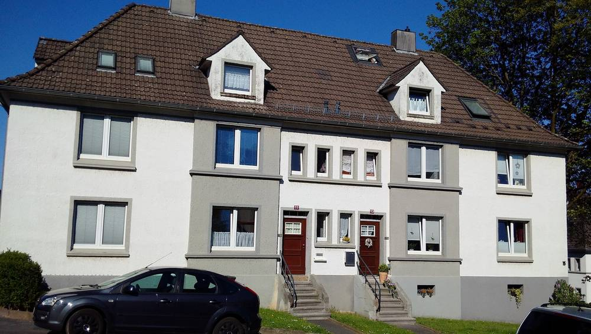

독일 졸링겐 주택협동조합, 지붕 태양광 414kWp로 182가구에 '세입자 전기'…사업자 "기본요금보다 최소 10% 싸게"

조합은 지붕만 빌려주고 공급사가 설치·운영해 조합 자본 투입 없어…2027년 봄 37가구 난방도 히트펌프로, 공사비가 월세에 얹히는 것 막는다
독일 노르트라인베스트팔렌주 졸링겐의 주택협동조합 '아이겐하임(Eigenheim)'이 2026년 6월부터 조합 건물 지붕에 놓인 태양광 414kWp의 전기를 182가구에 공급하고 있다. 공급 방식은 건물 지붕 태양광 전기를 그 건물 세입자에게 직접 파는 독일의 '세입자 전기(Mieterstrom)' 제도로, 쾰른의 공급사 아인훈데르트 에너지(Einhundert Energie)가 맡고 있으며 모든 가구가 원하면 골라 쓸 수 있다. 사업자 측에 따르면 요금은 지역 기본공급 요금보다 최소 10% 낮게 정해지며, 연 2,000kWh를 쓰는 2인 가구 기준으로 지금은 18% 싸다. 태양광은 조합이 지붕을 빌려주는 방식이라 조합이 자기 자본을 넣지 않았고, 2027년 봄 37가구에 먼저 들어갈 히트펌프도 공급사가 자금·시공·운영·유지보수를 맡는 계약 공급 방식으로 진행해 조합은 미리 정한 공사비 분담금만 낸다. 올리버 슬로트(Oliver Sloot) 조합 상임이사는 이 방식으로 기술·재무 투자 위험을 덜고, 난방을 바꾸는 동안에도 세입자의 기본 월세(난방비·관리비 제외)는 그대로 유지된다고 설명했으며, 조합은 현대화 비용이 월세에 얹히는 것을 막으려는 뜻이라고 밝혔다.
시민에너지 관점
국내 가구의 절반 넘게가 아파트에 살지만, 공동주택 지붕의 태양광 전기를 그 건물 세대에 직접 파는 길은 여전히 좁다. 독일은 2017년 세입자 전기 지원 제도를 만들어 이 길을 열었고, 졸링겐의 주택협동조합은 그 제도를 써서 182가구의 전기요금과 월세 부담을 함께 덜려 하고 있다. 다만 이번 설비는 조합이 지붕을 빌려주고 공급사가 짓고 운영하는 구조여서, 발전 이익이 조합원 몫으로 쌓이는 방식은 아니라는 한계도 있다. 국내에서도 공동주택 지붕 태양광 전기를 입주 세대에 직접 공급할 수 있게 제도를 고치고, 나아가 그 설비를 주택협동조합과 입주민이 직접 소유하는 길까지 열어야 한다.
출처: Solarserver 2026-11-04 기자 미표기 원문 보기
ドイツ・ゾーリンゲンの住宅協同組合、屋根の太陽光414kWpで182世帯に「テナント電力」…事業者「基本料金より最低10%安く」
組合は屋根を貸すだけで供給会社が設置・運営し、組合の資本投入なし…2027年春には37世帯の暖房もヒートポンプに、工事費の家賃転嫁を防ぐ
ドイツ・ノルトライン＝ヴェストファーレン州ゾーリンゲンの住宅協同組合「アイゲンハイム（Eigenheim）」が、2026年6月から組合の建物の屋根に設けた太陽光414kWpの電気を182世帯に供給している。供給の仕組みは、建物の屋根の太陽光の電気をその建物の入居者に直接売るドイツの「テナント電力（Mieterstrom）」制度で、ケルンの供給会社アインフンデルト・エナジー（Einhundert Energie）が担い、すべての世帯が希望すれば選んで利用できる。事業者側によると、料金は地域の基本供給料金より最低10%低く設定され、年2,000kWhを使う2人世帯の場合、現在は18%安い。太陽光は組合が屋根を貸す方式のため組合は自己資本を投じておらず、2027年春にまず37世帯に導入するヒートポンプも、供給会社が資金・施工・運営・保守を担う契約供給方式で進め、組合はあらかじめ決めた工事費の分担金だけを支払う。オリバー・スロート（Oliver Sloot）組合常務理事は、この方式で技術・財務面の投資リスクを軽くし、暖房を切り替える間も入居者の基本家賃（暖房費・管理費を除く）は変わらないと説明し、組合は近代化の費用が家賃に上乗せされるのを防ぐ狙いだとしている。
市民エネルギーの視点
韓国では世帯の半分以上がアパートに住んでいるが、共同住宅の屋根の太陽光の電気をその建物の世帯に直接売る道はまだ狭い。ドイツは2017年にテナント電力の支援制度をつくってこの道を開き、ゾーリンゲンの住宅協同組合はその制度を使って182世帯の電気料金と家賃の負担をともに軽くしようとしている。ただ今回の設備は、組合が屋根を貸し、供給会社が建てて運営する仕組みのため、発電の利益が組合員の取り分として積み上がる形ではないという限界もある。韓国でも共同住宅の屋根の太陽光の電気を入居世帯に直接供給できるよう制度を改め、さらにその設備を住宅協同組合と入居者が自ら所有する道まで開くべきだ。
出典: Solarserver 2026-11-04 記者名なし 原文を読む
德国索林根住房合作社以414kWp屋顶光伏为182户供应"租户电力"…运营方称"比基本电价至少便宜10%"
合作社只出租屋顶，由供应商安装运营，合作社无需投入自有资本…2027年春37户供暖也将改用热泵，防止改造费用转嫁到房租
德国北莱茵-威斯特法伦州索林根的住房合作社"艾根海姆（Eigenheim）"自2026年6月起，用合作社楼顶414kWp光伏发的电为182户供电。供电方式采用德国的"租户电力（Mieterstrom）"制度，即把建筑屋顶光伏所发电力直接卖给该建筑的租户，由科隆的供应商艾因洪德特能源（Einhundert Energie）负责，所有住户均可自愿选择使用。据运营方介绍，电价定为比当地基本供电电价至少低10%，以年用电2,000kWh的两人家庭计算，目前便宜18%。光伏采用合作社出租屋顶的方式，合作社没有投入自有资本；2027年春将首先为37户安装的热泵也采用由供应商负责融资、施工、运营和维护的合同供能方式，合作社只需支付事先确定的工程费分摊款。合作社执行理事奥利弗·斯洛特（Oliver Sloot）解释说，这一方式减轻了技术和财务上的投资风险，在更换供暖设备期间租户的基本房租（不含暖气费和物业费）保持不变；合作社表示，此举是为了防止现代化改造费用被加到房租上。
市民能源视角
韩国一半以上的家庭住在公寓里，但把共同住宅屋顶光伏的电力直接卖给楼内住户的道路仍然狭窄。德国在2017年建立租户电力支持制度打开了这条路，索林根的住房合作社正借助这一制度，同时减轻182户的电费和房租负担。不过，这次的设施是合作社出租屋顶、由供应商建设和运营，发电收益并不会作为合作社成员的份额积累下来，这也是其局限。韩国也应修改制度，让共同住宅屋顶光伏的电力能够直接供应给入住家庭，并进一步打开由住房合作社和住户自己拥有这些设施的道路。
来源: Solarserver 2026-11-04 未署名 查看原文
Solingen housing cooperative supplies "tenant electricity" to 182 households from 414 kWp of rooftop solar, at least 10% below the basic tariff according to the supplier
The cooperative only leases its roofs while the supplier installs and runs the systems, so no cooperative capital is needed; heat pumps for 37 homes follow in spring 2027 to keep upgrade costs off the rent
The housing cooperative Eigenheim in Solingen, North Rhine-Westphalia, has since June 2026 been supplying 182 households with electricity from 414 kWp of solar panels on the roofs of its buildings. The power is sold under Germany's tenant electricity (Mieterstrom) scheme, which lets rooftop solar power be sold directly to the tenants of the same building; the Cologne-based supplier Einhundert Energie runs it, and every household can opt in if it wishes. According to the project partners, the tariff is set at least 10% below the local basic supply tariff and is currently 18% cheaper for a two-person household using 2,000 kWh a year. Because the cooperative leases out its roofs for the solar systems, it has not had to put in any of its own capital, and the heat pumps that will first serve 37 homes in spring 2027 are also being delivered under a contracting model in which the supplier handles financing, installation, operation and maintenance while the cooperative pays only a fixed construction cost contribution. Oliver Sloot, managing board member of the cooperative, explained that the model shifts the technical and financial investment risk and that tenants' base rent, excluding heating and service charges, stays the same while the heating is replaced, and the cooperative said the aim is to stop modernisation costs from being passed on through the rent.
Citizen Energy View
More than half of Korean households live in apartments, yet the path for selling rooftop solar power directly to the households in the same building remains narrow. Germany opened that path with its tenant electricity support scheme in 2017, and the Solingen housing cooperative is using it to ease both electricity bills and rent for 182 households. Still, because the cooperative leases its roofs while the supplier builds and runs the systems, the generation income does not build up as a share for the cooperative's members, and that is a limitation. Korea should change its rules so that rooftop solar power on apartment buildings can be supplied directly to residents, and go further by opening the way for housing cooperatives and residents to own those systems themselves.
Source: Solarserver 2026-11-04 No byline Read the original